Навигация
· : Айсберг : ·
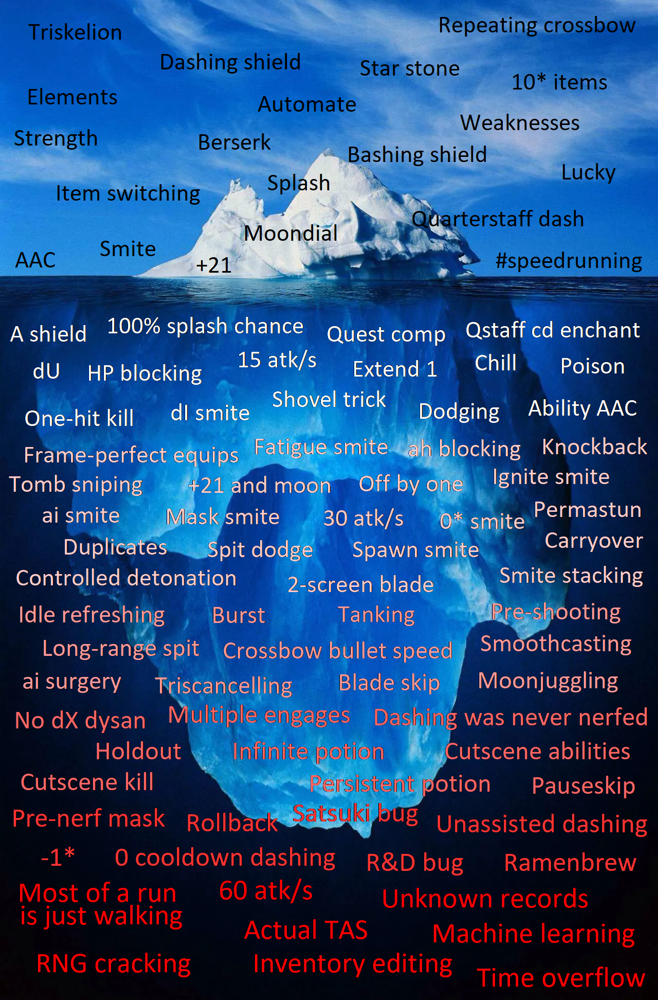Выше представлен айсберг со всеми спидраннерскими трюками, которые есть/были в игре.
Данный раздел является переводом айсберга с некоторыми дополнениями
Переведены только те разделы, которые существуют на данный момент в игре. Старых багоюзов тут нет.
База
Смена предметов
Ключевой особенностью SSRPG является возможность легко переключать предметы во время прохождения:
- Loadout'ы помогают быстро переключать предметы
- Stonescript предоставляет возможность автоматического переключения предметов
- Все предметы хранятся в одном неограниченном инвентаре, к которому можно получить доступ в любой момент во время прохождения.
Предметы для передвижения
Предметы, которые помогают двигаться быстрее:
-
Трискелион.
Один из Камней Души, дающий +1 к скорости передвижения.
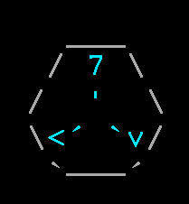 -
Стремительный/Таранный щит.
Позволяют совершить рывок к первому врагу, если он находится в определенном диапазоне от игрока (11<=дистанция<=16).
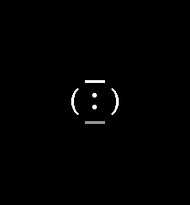
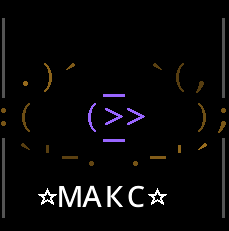 -
Квотерстафф.
Позволяет сделать мини рывок, вне зависимости от дистанции до врага.
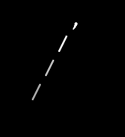 -
Звездный Камень.
Еще один из камней души. Притягивает предметы на земле и пропускает анимацию подбора.
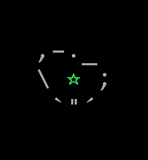
Лунный камень
Еще один из камней душ, полученный после победы над Дисангелосом на Каменистом плато 5* в первый раз.
При экипировке увеличивает скорость атаки предметов.
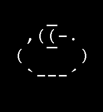Зелья
После создания Котла можно создавать зелья.
В игре есть 3 зелья, активно использующиеся для спидранов:
-
Берсерк.
Зелье берсерка значительно увеличивает скорость атаки игрока, что делает его отличным выбором зелья для определенных ситуаций, таких как зачистка большого количества мобов.
Оно также требуется для нескольких трюков.
-
Удача.
Зелье удачи гарантирует, что все удары будут критическими, и добавляет +1,8 к критической силе всего оружия.
(Обратите внимание, что оружие, которое обычно не наносит критических ударов, имеет критическую силу 0.)
Также при активации зелья вам даются 2 баффа: lucky_crit (он гарантирует критический удар) и lucky_mult (он увеличивает критический урон).
-
Сила.
Зелье силы утраивает урон, наносимый броне врага, и делает все атаки оглушающими.
В то время как Удачу или Берсерк предпочитают спидраннеры в большинстве локаций, зелье силы также нашло некоторое применение, особенно в Бурлящих шахтах.
Дебаффы
Дебаффы - негативные эффекты, которые можно применять на врагов.
Чаще всего применяются вместе с карой, чтобы нанести дополнительный урон, но могут быть полезны и сами по себе.
Слишком много дебаффов, чтобы их обсуждать, поэтому вот 3 основных:
-
Заморозка.
Замедляет атаки врагов. Может быть наложено сразу 6 эффектов, что делает этот дебафф очень совместимым с карой. -
Яд.
Уменьшает урон от атаки врага. -
Огонь.
Наносит переодический урон ( DoT (damage over time) ).
Элементы
Одна из основных механик игры.
Есть 5 элементов, каждый враг либо является одним из элементов (или всеми), либо не является ни одним.
Использование определенного элемента на враге, уязвимом к нему, может нанести больше урона.

Слабости
Большинство врагов обладают слабостями, которые можно использовать для нанесения большего урона.
Хотя большинство из них имеют стихийную природу, некоторые основаны на других свойствах вашей атаки.
Например, атакуете вы на дистанции или атакуете физическим типом урона.
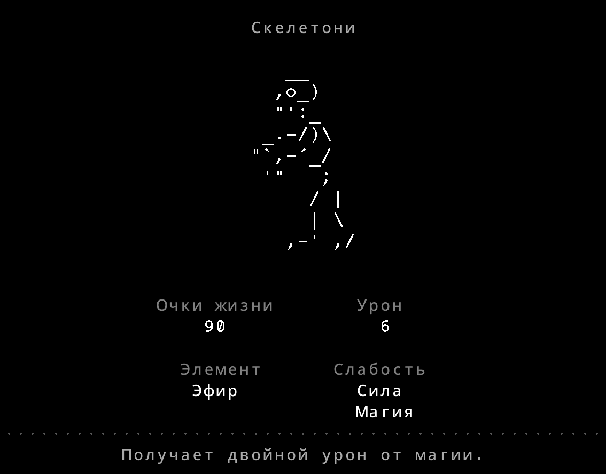Вспышка и пробитие
У некоторых видов оружия есть способность "распылять" атаку, поражая всех врагов в небольшой области вокруг изначально выбранного врага.
Жезлы и большие каменные/рунные мечи достигают 100% вероятности всппышки при улучшении до 10*, что делает их идеальным выбором для борьбы с группами мобов.
В простонародье "вспышку" часто называют "сплэшем" ( от англ. splash ).
Что касается пробития, то оно есть у рунных арбалетов или зачарованных не рунных арбалетов.
Работает как и вспышка, но поражает определенное количество врагов, но на более большем расстоянии.
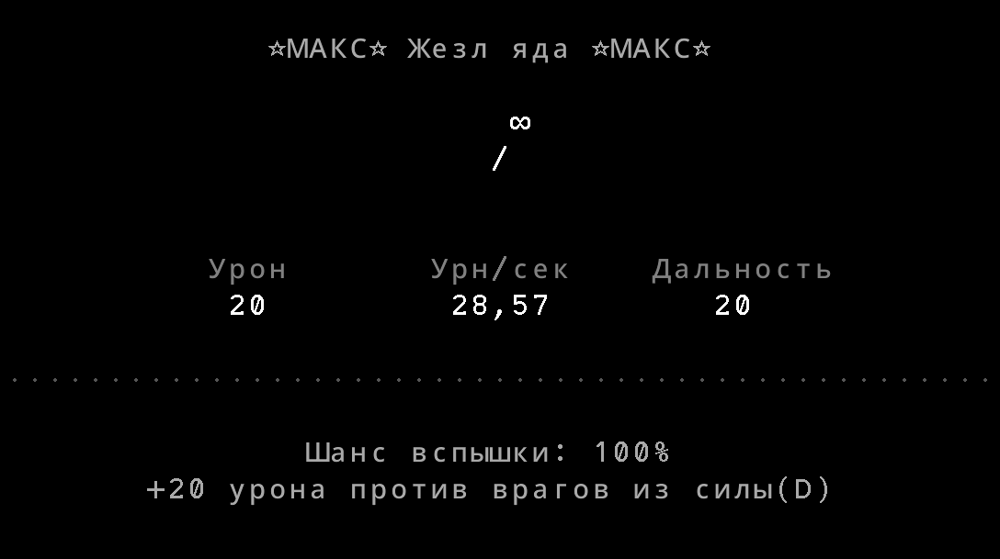Автоматизация
После первой победы над Нагараджей и получения Камня Разума вы разблокируете новую вкладку в верстаке: Автоматизировать.
Эта функция позволяет вам программировать своего игрока и заставлять его выполнять определенные действия.
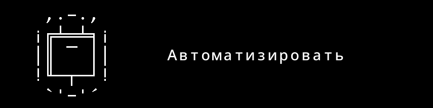Уровень 1
Рунные А-щиты
Одно из оборонительных оружий в игре.
Позволяет получить очень много брони, используя нужный щит для врага определенного элемента.
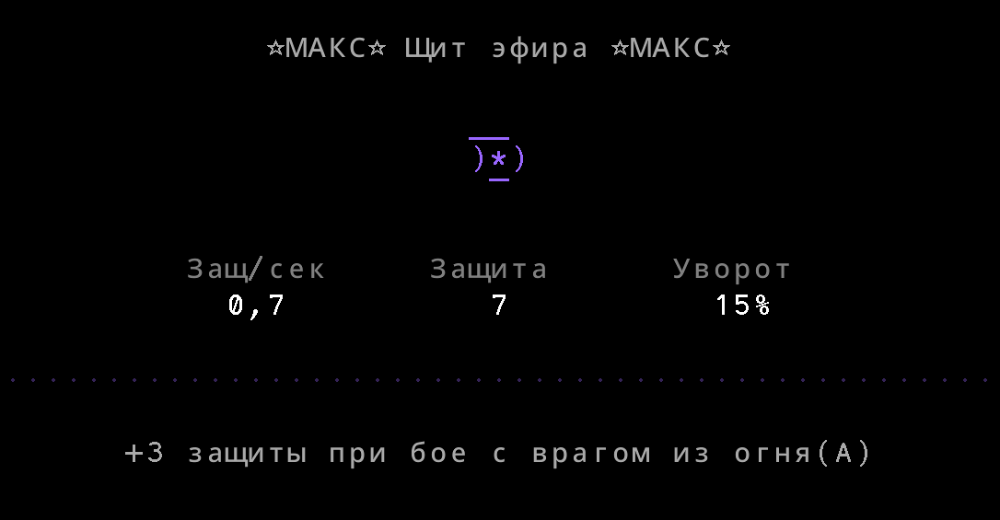dU
Один из префиксов, принадлежащих оружию, этот относится к элементу Эфир.
Он позволяет уничтожать врагов, не являющихся боссами, т. е. мгновенно убивать их.
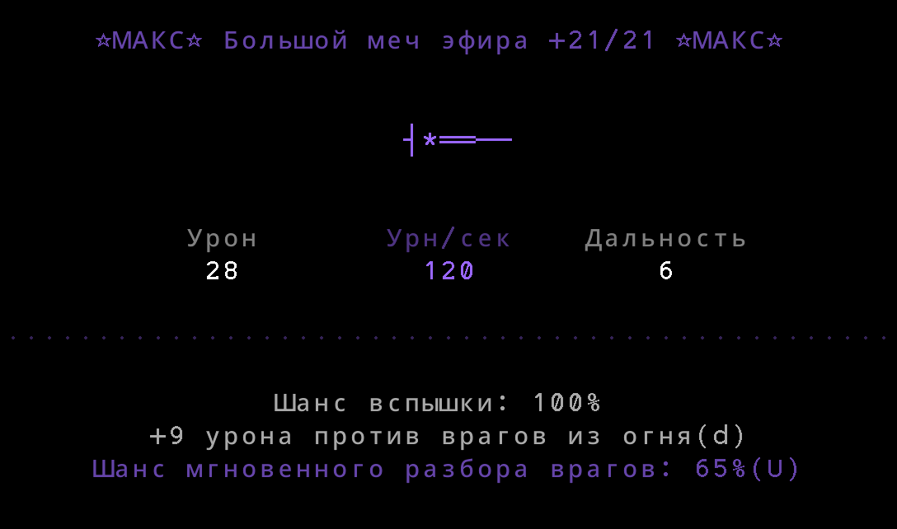Композитный щит + квестовый камень
Совместная экипировка камня квеста и композитного щита.
Это самый быстрый неэлементный метод регенерации брони.
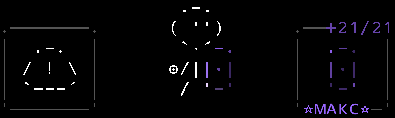Трюк с лопатой
Лопата имеет радиус действия 2, если экипирована.
Приближение к Хримниру с экипированной лопатой в конечном итоге переместит вас за пределы точки появления его снежков, что позволит вам свободно атаковать Хримнира.
Менее эффективно на голубых звездах или выше, так как это приведет к тому, что Хримнир отбросит вас назад своим задувом.
Блок здоровьем
Оснащение предметов, зачарованных на здоровье, для танковых атак и их снятие после этого.
Поскольку ваше здоровье регулируется линейно, это значительно снижает урон, который вы можете получить от атак, хотя это не рекомендуется для оффлайна, так как это резко увеличивает вашу среднюю потерю здоровья.
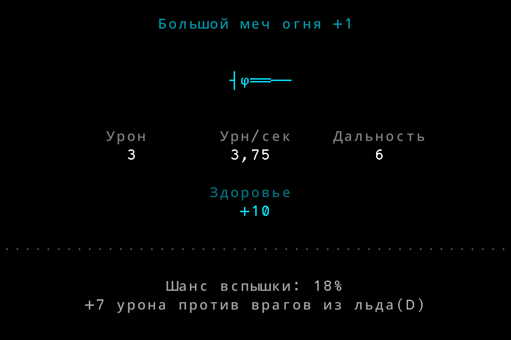Ваншот
Ваншот - убийство одним ударом.
Становясь сильнее, вы в конечном итоге будете убивать врагов всего одним ударом.
После этого фокус вашего улучшения должен сместиться в сторону скорости атаки, а не урона.
Уклонение
От некоторых атак в игре можно уклониться, используя способность Камня Разума или некоторые другие методы.
Кара
За каждого врага, задетого способностью КПБ, игрок получает бафф кары, который дает ему большое количество бонусного урона каждый раз, когда он накладывает дебафф на врага.
Из-за количества бонусного урона, который он обеспечивает, Smite имеет много вариантов использования:
- Обеспечивает быстрый бонусный урон врагам
- Используется с оружием со вспышкой для наложения дебаффов на группу врагов, быстро их уничтожая.

ПАА
ПАА - Пропуск Анимации Атаки; от англ. AAC (Attack Animation Canceling)
Условно, это прерывание анимации атаки оружия сразу после нанесения урона/выпуска снаряда, что приводит к более быстрым атакам.
ПАА способностей
Подобно AAC, можно прервать анимацию активной способности оружия сразу после завершения его применения, что позволяет завершить способность раньше.
Уровень 2
Идеальная экипировка
Используя StoneScript, мы можем идеально экипировать оружия каждый кадр, просчитывать игровое поле и выбирать лучшую тактику.
Перенос
Начиная от 10*+ все баффы и дебаффы из предыдущего забега переносятся в текущий забег.
Копии предметов
Создание нескольких дубликатов предмета. В основном это используется для 30 авс, хотя есть и другие варианты использования.
Хитбоксы
Если вы находитесь на максимально близком расстоянии от врага скелетимми или не-икры, существует вероятность, что снаряды будут выпущены позади врага.
Также вы можете "перепрыгивать" через некоторых врагов при помощи квотерстаффа, из за их маленького хитбокса.
Контроль взрыва
Двух детонирующих мини-боссов в Бурлящих Шахтах и Грибном Лесу 10*+ можно победить, просто врезавшись в них и (если у игрока недостаточно брони, чтобы выдержать урон) немедленно отскочив назад.
Снайп могилы
Стрельба по минибоссу R.I.Pieces(могила) в Призрачных залах с помощью арбалета или его аналогов.
Поскольку физические атаки проходят сквозь призрака, порожденного могилой, а могила уязвима к физическим атакам, это может сэкономить время по сравнению с попытками пройти мимо призраков.
Уклонение от плевков
От ядовитых плевков Нагаджары можно увернуться, двигаясь вперед, когда выстрел направлен на вас.
Отключение атак Хримнира
На 5*+ в Ледяном Хребте, Хримнир получает новую атаку: задув, чтобы противостоять врагам, использующим лопату, чтобы попасть за точку, откуда выстреливаются снежки.
Эта атака заменяет следующую атаку, если игрок находится достаточно близко к боссу.
Благодаря этому можно отключить атаки Хримнира. Лучше всего это использовать для отключения атаки Хримнира которая создает ледяной столб, хотя при достаточной скорости можно отключить все атаки босса.
+21 и лунный камень
Используя рунный меч, зачарованный на скорость атаки 10* +21, лунный камень и ПАА, вы можете атаковать так же быстро, как и при использовании двух мечей из рунного камня, зачарованных на скорость атаки 10* +20, экономя 42% затрат на зачарование.
Блок при помощи ah щита
Экипировав щит с префиксом ah, вы получите урон, при этом восстанавливая себе здоровье.
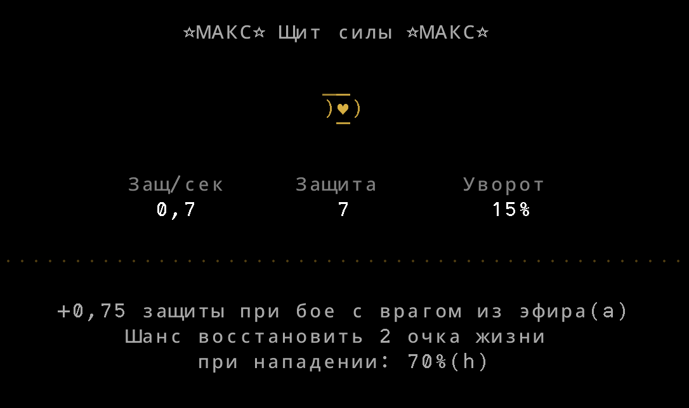Пермастан
Бесконечное оглушение врага путем повторного оглушения до того, как оно закончится.
Это можно провернуть с каменными молотами, тяжелым молотом, крюком кошкой и т.д.
Огненная кара
Атаки Золинки (питомца от огненного талисмана), могут наносить урон от кары, даже после достижения максимального количества дебаффов
0* Кара
Использование оружия 0* для наложения дебаффов на меньшее время, чтобы иметь возможность накладывать больше дебаффов, что приведет к большему урону от кары.
КПБ на 2 экрана
Диапазон способностей Клинка Падшего Бога напрямую зависит от вашего "взгляда" на карту. Поэтому вы можете значительно расширить его диапазон, вызвав screen.Next() перед активацией его способности.
30 авс
АВС - атаки в секунду
Использовать любой метод, чтобы атаковать 30 раз в секунду или один раз в каждом кадре.
Существует два основных метода достижения этого, оба из которых основаны на баффе Берсерка:
- Экипировать достаточно улучшенный рунный посох или руку скелета и атаковать с помощью специального ПАА
- Использовать Burst (ниже)
Burst
Экипировка дубликатов достаточно улучшенных предметов (возможно, с помощью лунного камня) для достижения более высокой скорости атаки.
Скип диалога
Можно сэкономить несколько кадров, пропуская диалог Дисангелоса, спам-кликая вместо того, чтобы позволить игре пропустить диалог.
Начиная с версии 4.00.0, это стало возможным без чрезмерного ГСЧ (генератора случайных чисел) с помощью «disable npcDialog» в Stonescript, так что этот трюк больше не является основным трюком.
Уровень 3
Дальний плевок
Поскольку цель способности маски основана на просматриваемом в данный момент экране, игрок может использовать screen.Next(), чтобы способность маски атаковала врагов на следующем экране, что может дать преимущества в зависимости от врага.
Пре-выстрел
Можно атаковать врага до перехода к определенному состоянию или фазе, чтобы эти пули поразили уже другого врага и нанести дополнительный урон.
Ранний износ брони
Дебафф Износ брони от Тяжелого Молота накладывается на первый удар, который получает противник, пока способность активна, в том числе от выстрелов заранее.
Благодаря этому можно накладывать Fatigue, не дожидаясь окончания способности.
Т.е., мы можем выстрелить заранее из арбалета, затем активировать молот, и когда долетит снаряд и нанесется урон врагу, то на него наложится дебафф износа брони.
ai Щит
Используя точно управляемый ледяной ai щит, можно выборочно применять кару к врагам (обычно к тем, кто находится прямо за ближайшим, чтобы создать возможность для рывка).
Пропуск клинка
Активация способности КПБ добавляет целых 2 секунды (60 кадров) к вашему общему времени. Поэтому в некоторых случаях может быть целесообразно не активировать ее во время цикла.
Если забег достаточно быстрый, то возможна реализация кары в 2 цилка:
- В первом цикле используем клинок
- Во втором цикле используем баффы кары пока они не закончились, не теряя времени на активацию КПБ
Перезарядка оружия
Если оружие не экипировано во время его состояния перезарядки, то время перезарядки оружия продолжит уменьшаться, а не приостанавливаться. Это позволяет вам экипировать другое оружие, не теряя времени.
Обратите внимание, что оружию по-прежнему потребуется 1 кадр, чтобы снова перейти в состояние ожидания.
Экипировка предметов для перезарядки этого кадра вне боя переводит его в состояние ожидания, экономя дополнительный кадр в бою.
Техники атаки
Техники атаки - последовательность экипировок, которая позволяет увечичить ваш урон в секунду.
Основные техники атаки:
- Мундиал
- Мунджагглинг
Первый используется с двумя мечами *10 +21 на скорость атаки. Рекомендовано использовать зелье удачи.
Второй используется с двумя мечами *10 без зачарований на скорость атаки и зельем берсерка (обязательно)
Все комбинации можно найти тут: Lunar phone book
Смузкастинг
Ответвление Статтерстепинга (см. ниже)
Специальная последовательность оснащения оружия для того чтобы атаковать пока вы бежите, не теряя время на остановку.
Используется эта техника в сочетании трискелиона и оружия, имеющего маленькую дистанцию ходьбы, с оружием, которое производит атаку в один кадр.
Обычно используются такие оружия (Левое и Правое):
- Трискелион и Топор
- Меч и Трискелион
Применения:
- При смузкастинге лопаты, можно подобраться близко к врагу.
- Без использования зелий, можно смузакастить *10 многозарядный арбалет
- При использовании зелья берсерка можно смузкастить почти все:
посохи, большие мечи, маленькие мечи, тяжелые арбалеты и т.д.
(необходимо зачарование на скорость атаки)
Статтерстепинг
При использовании трискелиона, мы как бы продлеваем нашу ходьбму на кадр вперед, что позволяет нам в следущем кадре не использовать трискелион и при этом не терять скорость ходьбы.
Таким образом, можно чередовать через кадр экипирование трискелиона + оружия с близкой дистанцией и другого оружия
Применения:
- Смузкастинг
- Статтерстепинг маски + композитного щита, что позволяет накапливать броню и меньше расходовать зелье при пермапоте
Кб техника
Кб техника (от англ. Kb tech - Knockback technique - Техника отталкивания) - смузкастинг тяжелого каменного или рунного арбалета, для того чтобы оттолкнуть врага, а затем дэшнуться на него снова.
При использовании данной техники стоит учесть:
- Лучше использовать каменный арбалет, чем рунный, т.к. он имеет дальность отталкивания в 4 единицы, а рунные - 3
- Лучше использовать 0* арбалет, чтобы не убивать врага и как можно больше продэшаться на нем. Звездная прокачка тяжелого арбалета не влияет на его скорость атаки, поэтому ей можно принебречь
Раннее пробуждение
Нанося урон врагу издалека (например, используя Маску или способность КПБ и screen.Next()), можно заставить врага приблизиться к вам раньше, что позволит совершать более ранние рывки.
Множественное вовлечение
Поскольку условием активации способностей при взаимодействии является просто переключение врагов из другого состояния в состояние 2, можно активировать способности при взаимодействии различных предметов на одном враге.
Щиты с префиксом ai обладают особым свойством: для этого не требуется дополнительный щит.
Пермапот
Внутреннее зачарование «Продление» маски культиста удлиняет не только продолжительность самого старого усиления, но и его максимальную продолжительность. Таким образом, если обновляемый бафф (например, от зелья) продлен таким образом, то при его обновлении он будет действовать гораздо дольше, чем при первоначальном появлении.
Таким образом, имея +21 маску с секретным зачарованием, мы можем иметь бесконечное зелье, но только с 10*+ локаций, из-за переноса баффов на следующий цикл.
Вот примерно как можно сделать пермапот:
- Входим на локацию, используем зелье и берем маску в руку
- Проходим всю локацию с маской в руках. Снимать ее можно, но учтите, что если зелье закончится, то ничего не получится
Также, пока маска не надета на вас, зелье не будет накапливать максимальную длительность. - После подбора сундуков, активируем зелье по-новой.
- Следущий цикл. И, при правильном исполнении, вы должны иметь при себе зелье, а также бафф от этого зелья, длительность которого примерно составляет длительность вашего прохождения уровня.
Далее вы можете проходить локации, практически не надевая маски. Просто активируйте зелье, когда оно вот вот закончится, и следите за тем, чтобы время его действия не истекло.
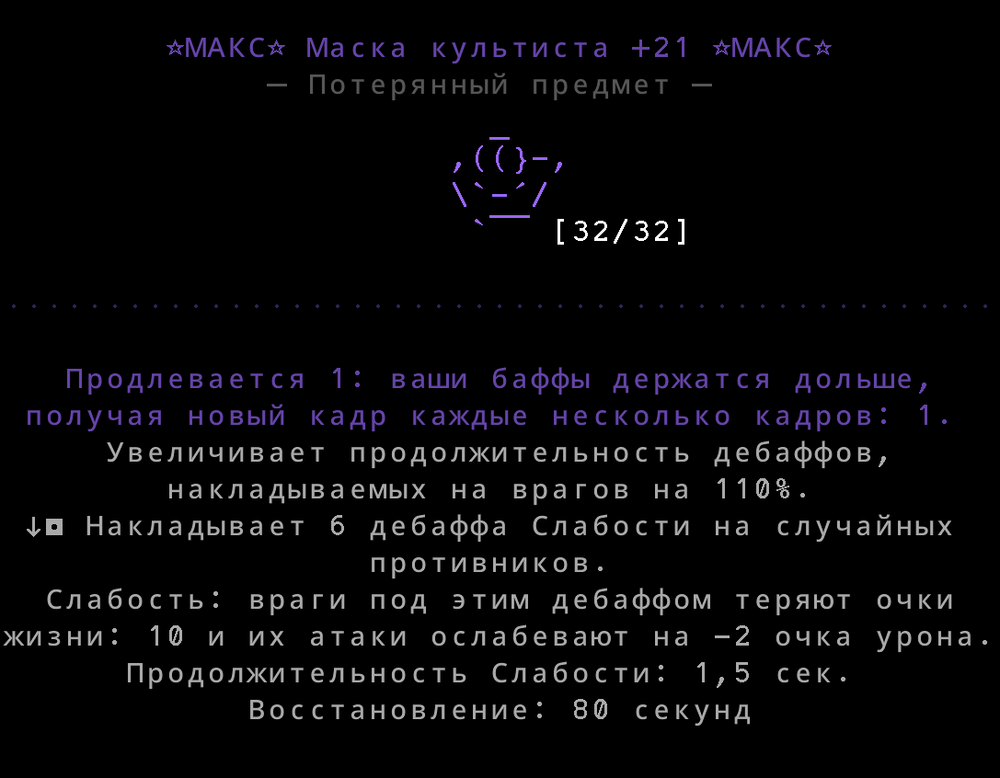
Продление паузой
Когда вы нажимаете на кнопку паузы, кадры локации увеличиваются на 1, кроме персонажа игрока и связанных с ним характеристик.
Благодаря этому можно продлить длительность положительных эффектов или активировать способности раньше, при этом поражая врага в первый уязвимый кадр.
Путевые точки
Путевые точки — это невидимые объекты, которые влияют на персонажа игрока в зависимости от того, выбран он целью или нет.
Когда целью является путевая точка, игрок не сможет использовать способности (обратите внимание, что этот эффект сохраняется на следующем уровне в течение нескольких кадров, если путевая точка выбрана целью, когда игрок уходит).
Если установлена точка пути, она также заморозит игрока на месте на заданный период времени, когда игрок наступит на ее местоположение.
Таким образом, пропуск путевых точек обычно позволяет существенно сэкономить время. Некоторые найденные методы упомянуты ниже в айсберге.
Катсцен килл
Катсцен килл - убийство во время катсцены(анимации босса, его подготовки к бою и т.д.)
Не все катсцены отключают активацию способностей. В этих случаях вы можете активировать способности во время катсцены, чтобы получить значительное начальное преимущество или даже убить босса.
Предварительная стрельба и/или активация способностей во время катсцены в некоторых случаях могут позволить вам убить босса, не теряя времени на ее проигрывание.
Откат
Намеренное использование более старой версии игры, чтобы воспользоваться удаленными функциями или уязвимостями.
Steam позволяет игрокам загружать более ранние версии игр, включая SSRPG. На мобильных версиях игры тоже возможно, но не официально.
Уровень 4
60 авс
Выполнение 60 атак каждую секунду или 2 в каждом кадре.
В настоящее время это возможно только путем экипирования в каждом кадре различных пар оружия, зачарованного на скорость атаки, при наличии баффа «Берсерк». Это считается серьезным злоупотреблением.
Изменение инвентаря
Редактируя сохранения, можно редактировать оружие, необходимое для ускоренного прохождения.
Также можно редактировать оружие, которое иначе невозможно получить. Использование этих предметов считается серьезным злоупотреблением.
Взлом ГСЧ
ГСЧ - генератор случайных чисел
Манипулирование ГСЧ в игре, чтобы появление мобов и другие события, связанные с ГСЧ, были более благоприятными для спидраннеров.
Считается серьезным злоупотреблением